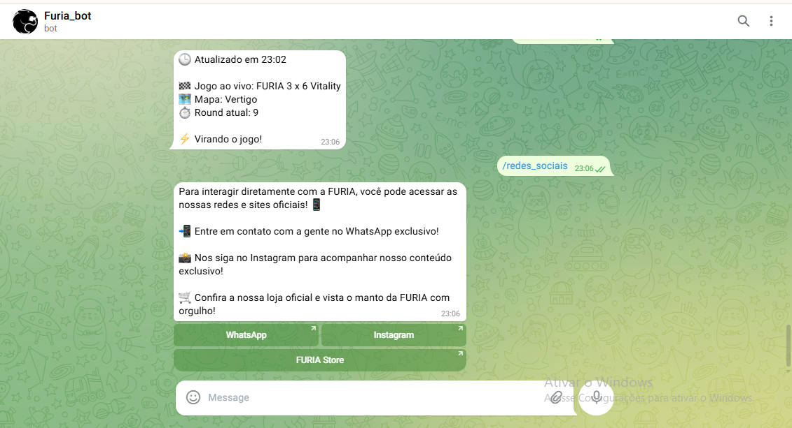

.png )
FURIA FANBOT
Conheça o FURIA FanBot, o assistente no Telegram para fãs de CS:GO.
Com notícias,agenda de jogos, momentos épicos, quiz e stickers para sua coleção.
Conheça o FURIA FanBot, o assistente no Telegram para fãs de CS:GO.
Com notícias,agenda de jogos, momentos épicos, quiz e stickers para sua coleção.
Interação com a torcida em tempo real.
Conheça as nossa redes e sites oficias!
Tudo sobre o time no seu Telegram
ACESSAR AGORAPlacar atualizado e estatísticas em tempo real
Gritos de guerra e interação com outros fãs
Reviva os melhores plays da FURIA